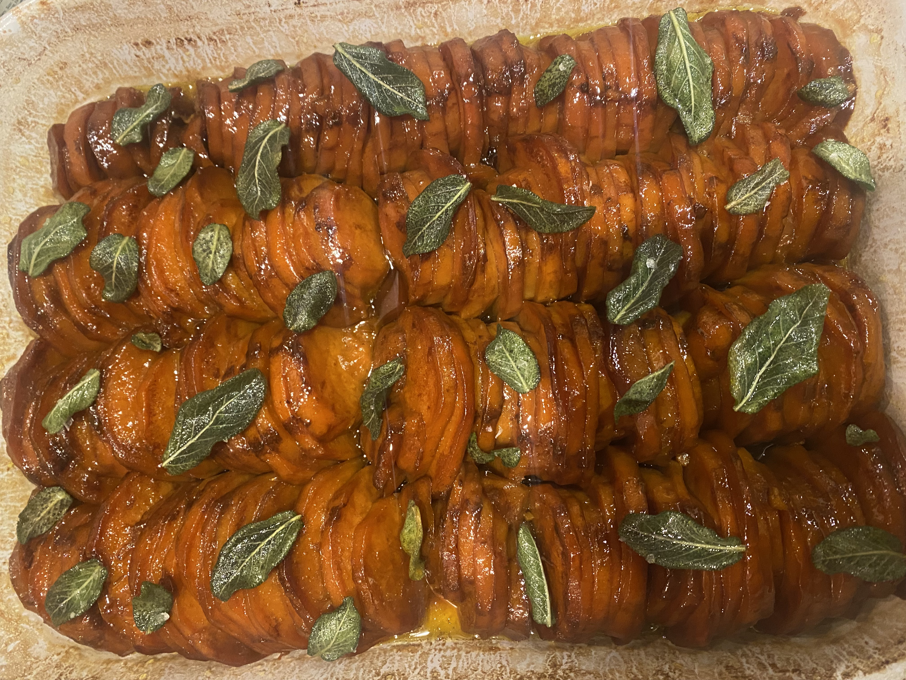
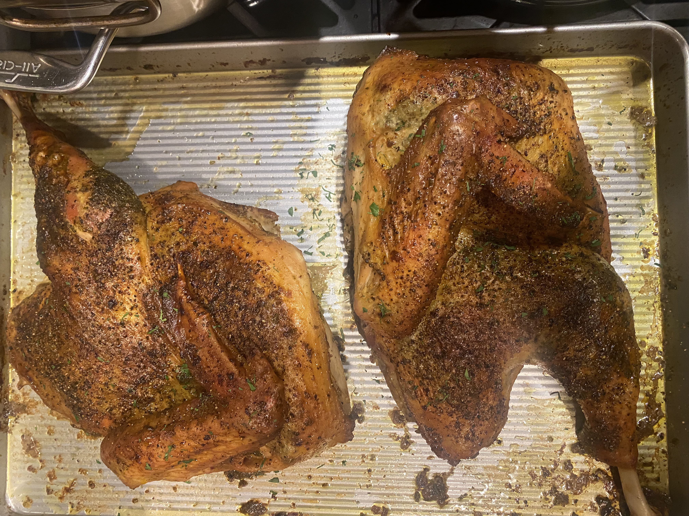
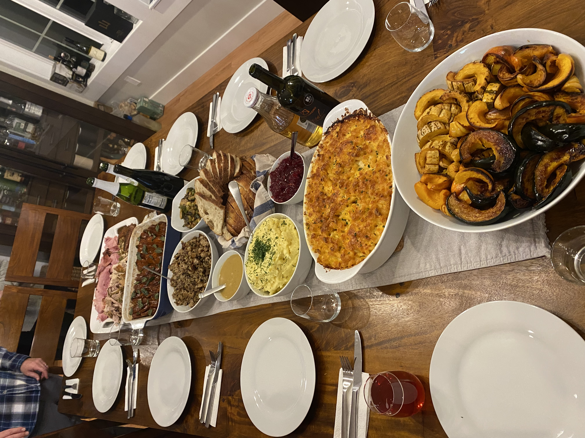
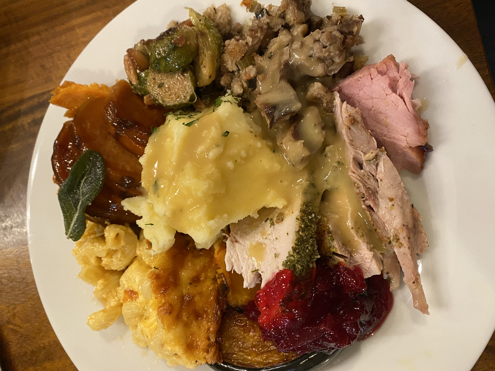

About Vera
Vera Cohen is a bilingual culinary professional based in San Francisco, with a Culinary Arts degree and 6+ years of diverse experience in the food industry. Skilled in preparing a wide variety of cuisines, Vera excels in accommodating dietary restrictions and creating efficient, high-quality meals. Her passion lies in crafting flavorful dishes and delivering exceptional dining experiences.
Professional Experience
-
Sous Chef at Choice Cookz, LLC, Seattle
-
- Elevated catering events through innovative menu planning
- Streamlined kitchen operations and inventory management
-
Line Cook at Five Iron Golf, Seattle
-
- Contributed to menu innovation with new dishes
- Improved inventory processes, reducing waste in a fast-paced environment
Food Gallery
Tap on the images to view them in full size. Tap outside the image or on the close button to exit.




Contact Vera
Email: vcohenmontero@gmail.com
Phone: 206-605-5133